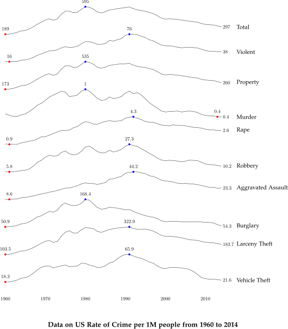

Tufte in MetaPost
Qiong Cai (last updated on September 26, 2016)
I often used MetaPost to create publish quality graphics. After seeing Lukasz Piwek's work on Tufte in R, I would like to reproduce Tufte's statistics charts by using MetaPost.
Minimal Line Plot
Minimal line plot in Tufte style.
scrolling :=1;
prologues :=3;
outputformat := "svg";
% default font is 14pt Palatino
defaultfont := "pplr8r";
defaultscale := 14pt/fontsize defaultfont;
verbatimtex
%&latex
\documentclass{article}
\usepackage[sc]{mathpazo}
\usepackage[scaled]{helvet}
\usepackage{eulervm}
\begin{document}
etex
beginfig(1);
numeric xlen, ylen, tip, extra;
xlen = 20cm;
ylen=10cm;
tip = 3pt;
extra = 20pt;
% draw x-axis labels
for i =1967 step 1 until 1977:
draw (xlen*(i-1966)/11, -tip)--(xlen*(i-1966)/11, tip);
label.bot(decimal(i), (xlen*(i-1966)/11,-tip*2));
endfor
% draw y-axis labels
for i=300 step 20 until 400:
numeric tt;
tt := ylen * (((i-300)/20 + 1)/6);
draw (-tip, tt)--(tip, tt);
string ss;
ss = "$" & decimal(i);
label.lft(ss, (-tip*2, tt));
endfor
draw (tip+tip,ylen*(5/6))..(xlen+extra, ylen*(5/6))
dashed evenly scaled 2;
draw (tip+tip,ylen*(6/6))..(xlen+extra, ylen*(6/6))
dashed evenly scaled 2;
% draw dots
string s;
numeric n, i;
pair p[];
i := 0;
forever:
s := readfrom "tufte-1.dat";
exitif s = EOF;
n := scantokens (s);
i := i + 1;
p[i] := (xlen*(i/11), ylen*(n/6));
drawdot p[i] withpen pencircle scaled 6;
endfor
% draw trends
numeric size;
size := i;
for i=2 step 1 until size:
draw p[i-1]--p[i];
endfor
% draw captions
label.lft("5%", (xlen*(1977.2-1966)/11, ylen*(5.5/6)));
label.lft(btex \begin{tabular}{r}\textbf{\Large Per capita} \\
\textbf{\Large budget expandures} \\
\textbf{\Large in constant dollars} \end{tabular} etex,
(xlen*(1977-1966)/11, ylen*(1.5/6)));
endfig;
end;
Range Frame Plot
Range frame plot in Tufte style.
scrolling :=1;
prologues :=3;
outputformat := "svg";
% default font is 14pt Palatino
defaultfont := "pplr8r";
defaultscale := 14pt/fontsize defaultfont;
input format;
verbatimtex
%&latex
\documentclass{article}
\usepackage[sc]{mathpazo}
\usepackage[scaled]{helvet}
\usepackage{eulervm}
\begin{document}
etex
input mp-utils;
beginfig(1);
numeric xlen, ylen, tip, sep,yshift, xshift;
xlen=20cm;
ylen=10cm;
tip=3pt;
sep=0.5cm;
xshift=1;
yshift=5;
string wt, mpg;
numeric n_x[], n_y[], s;
numeric x_min, x_max, y_min, y_max;
numeric x_median, y_median;
numeric x_q_one, x_q_three;
numeric y_q_one, y_q_three;
s := 0;
x_min := 6;
x_max := 0;
y_min := 40;
y_max := 0;
% read data points and map into (x,y) coordindates
forever:
wt := readfrom "mtcars-wt.dat";
mpg := readfrom "mtcars-mpg.dat";
exitif wt = EOF;
n_x[s] := scantokens (wt);
n_y[s] := scantokens (mpg);
drawdot ((n_x[s]-xshift)/6*xlen, (n_y[s]-yshift)/35*ylen)
withpen pencircle scaled 6;
if ( n_x[s] < x_min ):
x_min := n_x[s];
fi
if ( n_x[s] > x_max ):
x_max := n_x[s];
fi
if ( n_y[s] < y_min ):
y_min := n_y[s];
fi
if ( n_y[s] > y_max ):
y_max := n_y[s];
fi
s := s + 1;
endfor
sort(n_x)(0,s-1);
sort(n_y)(0,s-1);
x_median = median(n_x)(0,s-1);
y_median = median(n_y)(0,s-1);
if odd s:
ii := floor(s/2);
x_q_one := median(n_x)(0,ii);
x_q_three := median(n_x)(ii,s-1);
y_q_one := median(n_y)(0,ii);
y_q_three := median(n_y)(ii,s-1);
else:
ii := s/2;
x_q_one := median(n_x)(0, ii-1);
x_q_three := median(n_x)(ii, s-1);
y_q_one := median(n_y)(0,ii-1);
y_q_three := median(n_y)(ii, s-1);
fi;
draw (((x_min-xshift)/6)*xlen, 0)--(((x_max-xshift)/6)*xlen,0);
draw (0, ((y_min-yshift)/35)*ylen)--(0, ((y_max-yshift)/35)*ylen);
draw ((x_min-xshift)/6*xlen, -tip)--((x_min-xshift)/6*xlen,0)
withcolor red withpen pencircle scaled 2;
label.bot (decimal(roundd(x_min,1)), ((x_min-xshift)/6*xlen, -2*tip));
draw ((x_max-xshift)/6*xlen, -tip)--((x_max-xshift)/6*xlen,0)
withcolor red withpen pencircle scaled 2;
label.bot (decimal(roundd(x_max,1)), ((x_max-xshift)/6*xlen, -2*tip));
draw ((x_median-xshift)/6*xlen, -tip)--((x_median-xshift)/6*xlen,0)
withcolor blue withpen pencircle scaled 2;
label.bot (decimal(roundd(x_median,1)), ((x_median-xshift)/6*xlen, -2*tip));
draw ((x_q_one-xshift)/6*xlen, -tip)--((x_q_one-xshift)/6*xlen,0)
withcolor red withpen pencircle scaled 2;
label.bot (decimal(roundd(x_q_one,1)), ((x_q_one-xshift)/6*xlen, -2*tip));
draw ((x_q_three-xshift)/6*xlen, -tip)--((x_q_three-xshift)/6*xlen,0)
withcolor red withpen pencircle scaled 2;
label.bot (decimal(roundd(x_q_three,1)), ((x_q_three-xshift)/6*xlen, -2*tip));
draw (0, (y_min-yshift)/35*ylen)--(-tip, (y_min-yshift)/35*ylen)
withcolor red withpen pencircle scaled 2;
label.lft (decimal(roundd(y_min,1)), (-2*tip, (y_min-yshift)/35*ylen));
draw (0, (y_max-yshift)/35*ylen)--(-tip, (y_max-yshift)/35*ylen)
withcolor red withpen pencircle scaled 2;
label.lft (decimal(roundd(y_max,1)), (-2*tip, (y_max-yshift)/35*ylen));
draw (0, (y_median-yshift)/35*ylen)--(-tip, (y_median-yshift)/35*ylen)
withcolor blue withpen pencircle scaled 2;
label.lft (decimal(roundd(y_median,1)), (-2*tip, (y_median-yshift)/35*ylen));
draw (0, (y_q_one-yshift)/35*ylen)--(-tip, (y_q_one-yshift)/35*ylen)
withcolor red withpen pencircle scaled 2;
label.lft (decimal(roundd(y_q_one,1)), (-2*tip, (y_q_one-yshift)/35*ylen));
draw (0, (y_q_three-yshift)/35*ylen)--(-tip, (y_q_three-yshift)/35*ylen)
withcolor red withpen pencircle scaled 2;
label.lft (decimal(roundd(y_q_three,1)), (-2*tip, (y_q_three-yshift)/35*ylen));
label.top(btex \begin{tabular}{c}\textbf{\large Miles per Gallon of Fuel}
\end{tabular} etex, (0, (35-yshift)/35*ylen));
label.bot(btex \textbf{\large Car weight (lb/1000)} etex, ((6-xshift)/6*xlen/2,-2*sep));
endfig;
end;
Dot-Dash Plot
Dot-dash plot in Tufte style.
scrolling :=1;
prologues :=3;
outputformat := "svg";
% default font is 14pt Palatino
defaultfont := "pplr8r";
defaultscale := 14pt/fontsize defaultfont;
input format;
verbatimtex
%&latex
\documentclass{article}
\usepackage[sc]{mathpazo}
\usepackage[scaled]{helvet}
\usepackage{eulervm}
\begin{document}
etex
beginfig(1);
numeric xlen, ylen, tip, sep,yshift, xshift;
xlen=20cm;
ylen=10cm;
tip=5pt;
sep=0.5cm;
xshift=1;
yshift=5;
string wt, mpg;
numeric n_x[], n_y[], s;
s := 0;
forever:
wt := readfrom "mtcars-wt.dat";
mpg := readfrom "mtcars-mpg.dat";
exitif wt = EOF;
n_x[s] := scantokens (wt);
n_y[s] := scantokens (mpg);
drawdot ((n_x[s]-xshift)/6*xlen, (n_y[s]-yshift)/35*ylen)
withpen pencircle scaled 6;
draw ((n_x[s]-xshift)/6*xlen, -tip)--((n_x[s]-xshift)/6*xlen,tip) withpen pencircle scaled 1;
draw (-tip, (n_y[s]-yshift)/35*ylen)--(tip, (n_y[s]-yshift)/35*ylen) withpen pencircle scaled 1;
s := s + 1;
endfor
for i=2 step 1 until 5:
label.bot(decimal(i), ((i-xshift)/6*xlen, -3*tip));
endfor
for i=10 step 5 until 35:
label.lft(decimal(i), (-3*tip, (i-yshift)/35*ylen));
endfor
label.top(btex \begin{tabular}{c}\textbf{\Large Miles per Gallon of Fuel} \end{tabular} etex, (0, (35-yshift)/35*ylen+1*sep));
label.bot(btex \textbf{\Large Car weight (lb/1000)} etex, ((6-xshift)/6*xlen/2,-2.5*sep));
endfig;
end;
Sparkline

Sparkline.
yshift := 19cm;
s := 0;
forever:
total := readfrom "crime-total.dat";
exitif total = EOF;
total := total Sdiv 10;
n_total[s] := Scvnum(total);
s := s + 1;
endfor
pair min_p, max_p, pp;
min_p := mymin(n_total)(0,s-1);
max_p := mymax(n_total)(0,s-1);
scale := ypart max_p - ypart min_p;
pair p, c;
p := ((0/s)*xlen, (n_total[0]-(ypart min_p))/scale*ylen+yshift);
for i=1 step 1 until (s-1):
c := ((i)/s*xlen, (n_total[i]-(ypart min_p))/scale*ylen+yshift);
draw p--c;
p := c;
endfor
pp := ((xpart min_p)/s*xlen, (0)/scale*ylen+yshift) ;
drawdot pp withcolor red withpen pencircle scaled 4;
label.top (format("%0f", (ypart min_p)), pp+(0,tip));
pp := ((xpart max_p)/s*xlen, (ypart max_p - ypart min_p)/scale*ylen+yshift) ;
drawdot pp withcolor blue withpen pencircle scaled 4;
label.top (format("%0f", (ypart max_p)), pp+(0,tip));
pp := ((s-1)/s*xlen, (n_total[s-1]-ypart min_p)/scale*ylen+yshift) ;
label.rt (format("%0f", n_total[s-1]), pp);
label.rt (btex \large Total etex, pp + (2*sep, 0));